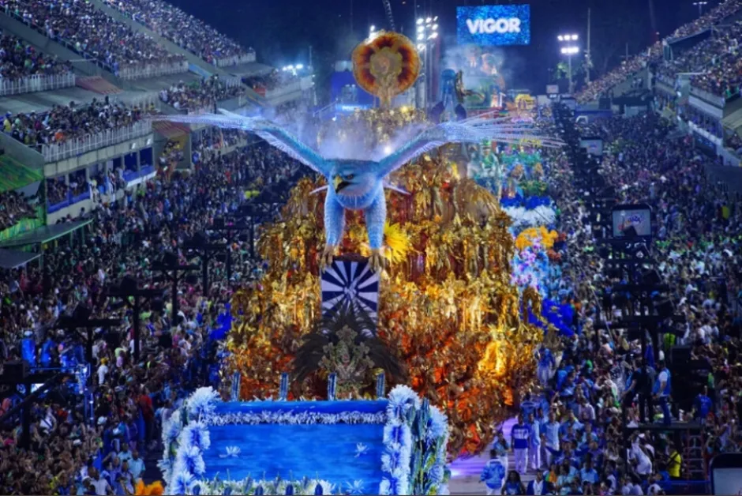
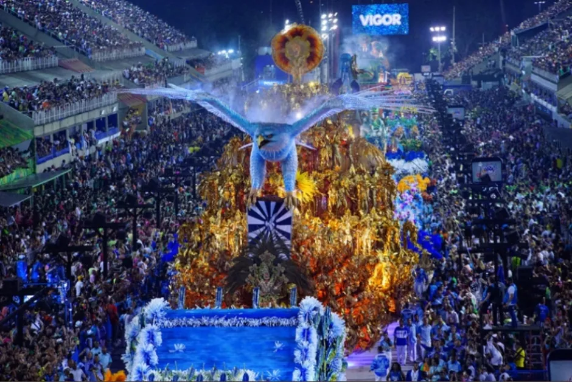

Cultura
Cultura
Festa Junina

Carnaval
"O Carnaval é uma tradicional festa popular realizada em diferentes locais do mundo, sendo a mais celebrada no Brasil. Apesar do forte secularismo presente no Carnaval, a festa é tradicionalmente ligada ao catolicismo, uma vez que sua celebração antecede a Quaresma. O Carnaval não é uma invenção brasileira, pois sua origem remonta à Antiguidade. A palavra Carnaval é originária do latim, carnis levale, cujo significado é “retirar a carne”. Esse sentido está relacionado ao jejum que deveria ser realizado durante a Quaresma e também ao controle dos prazeres mundanos. Isso demonstra uma tentativa da Igreja Católica de controlar os desejos dos fiéis. 

©Todos os direitos reservados
Lilian Semeão- 1°info
Lilian Semeão- 1°info